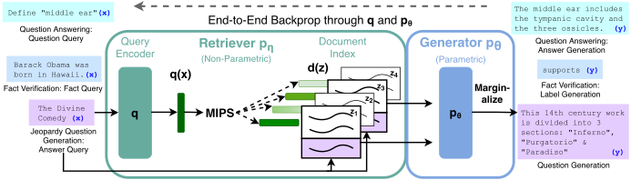
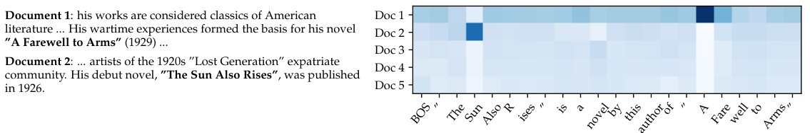

篇首导读
大模型把知识存进参数，但参数里的知识难更新、难溯源、会幻觉。这篇论文提出 RAG：把参数记忆（一个预训练 seq2seq 模型 BART）和非参数记忆（整个 Wikipedia 的稠密向量索引）结合起来，端到端微调。检索器根据问题找出 top-k 文档，生成器基于问题和文档生成答案。
论文比较了两种边缘化方式：RAG-Sequence 对整段输出使用同一批文档；RAG-Token 允许每个 token 依赖不同文档。前者适合答案集中的任务，后者适合需要综合多个文档的任务（比如 Jeopardy 问答）。在开放域问答上，RAG 在 NQ、WQ、CT 上取得 SOTA；在生成任务上，输出比纯参数模型更具体、更多样、更符合事实；而且只要替换文档索引，就能更新模型知识，无需重新训练。
怎么读：先看 Figure 1 和 2.1 的两个公式，理解“把文档当隐变量、对 top-k 边缘化”这件事；然后看 Table 1 的 QA 结果和 Table 6 的消融。2.4 的训练细节和附录的解码细节可以第二遍再读。
术语卡
完整术语表 →- Parametric Memory 参数记忆
- 存储在模型权重里的知识。训练时写入，推理时通过前向计算读取；更新需要重新训练或微调。
- Non-parametric Memory 非参数记忆
- 放在模型权重之外的显式知识库，这里指 Wikipedia 的稠密向量索引。可以随时替换、检查、编辑。
- RAG-Sequence 序列级 RAG
- 整段输出共用同一组 top-k 文档：先对每个文档算整段序列概率，再按检索概率加权求和。
- RAG-Token token 级 RAG
- 每个输出 token 都可以对不同的文档做边缘化，因此一段回答可以综合多个文档的内容。
- Retriever / Generator 检索器 / 生成器
- 检索器 pη(z|x) 根据问题返回文档分布；生成器 pθ(y|x,z) 根据问题和文档生成答案。
- DPR 稠密段落检索
- 双编码器检索器：问题编码器和文档编码器分别把输入映射成向量，用内积算相似度，再用 MIPS 找 top-k。
- Marginalization 边缘化
- 把“检索到哪篇文档”当作隐变量，对所有候选文档的概率加权求和（或求积），而不是只选一篇。
- Thorough / Fast Decoding 彻底解码 / 快速解码
- RAG-Sequence 的两种近似：彻底解码对每个文档跑 beam search 并补算概率；快速解码假设未出现在 beam 里的文档概率为 0。
目录
摘要与引言
大型预训练语言模型已被证明能把事实知识存储在参数中，并在下游 NLP 任务上微调后达到 SOTA。然而，它们访问和精确操作知识的能力仍然有限，因此在知识密集型任务上，性能落后于任务专用架构。此外，为决策提供出处、更新世界知识，仍是开放的研究问题。具有可微分显式非参数记忆访问机制的预训练模型，此前只在抽取式下游任务上被研究过。
我们探索一种通用的微调配方——检索增强生成（RAG）：把预训练的参数记忆和非参数记忆结合起来做语言生成。我们提出的 RAG 模型中，参数记忆是一个预训练 seq2seq 模型，非参数记忆是 Wikipedia 的稠密向量索引，通过预训练神经检索器访问。我们比较两种 RAG 形式：一种在整段生成序列上使用相同的检索段落，另一种允许每个 token 使用不同段落。我们在广泛的知识密集型 NLP 任务上微调并评估，在三个开放域问答任务上取得 SOTA，超过参数化 seq2seq 模型和任务专用的“检索–抽取”架构。对于语言生成任务，RAG 生成的文本比纯参数 seq2seq 基线更具体、更多样、更符合事实。
预训练神经语言模型已被证明能从数据中学到大量深入知识，无需访问外部记忆，相当于一个参数化的隐式知识库。这令人兴奋，但这类模型有缺点：不容易扩展或修订记忆，不能直接为预测提供洞见，还可能产生“幻觉”。把参数记忆与非参数（即基于检索的）记忆结合的混合模型，可以缓解部分问题：知识可以直接修订和扩展，访问到的知识可以检查和解释。REALM 和 ORQA 是两个近期模型，把掩码语言模型与可微分检索器结合，展示了有希望的结果，但只探索了开放域抽取式问答。本文把参数与非参数记忆带到 NLP 的“主力”——序列到序列（seq2seq）模型上。
我们通过一种通用微调方法，为预训练的参数记忆生成模型赋予非参数记忆，称为检索增强生成（RAG）。参数记忆是预训练 seq2seq Transformer，非参数记忆是 Wikipedia 的稠密向量索引，通过预训练神经检索器访问。我们在一个端到端训练的概率模型中组合这些组件（Figure 1）。检索器（Dense Passage Retriever，DPR）根据输入提供隐文档，seq2seq 模型（BART）再基于这些隐文档和输入生成输出。我们用 top-K 近似对隐文档做边缘化：可以按输出整体（假设同一文档对所有 token 负责），也可以按 token（不同文档对不同 token 负责）。像 T5 或 BART 一样，RAG 可以在任何 seq2seq 任务上微调，生成器和检索器联合学习。
此前有大量工作提出用非参数记忆丰富系统，但都是为特定任务从零训练，例如记忆网络、栈增强网络、记忆层。相比之下，我们探索的是参数和非参数记忆组件都已预训练、并预加载大量知识的设置。关键的是，使用预训练访问机制，无需额外训练就具备访问知识的能力。
我们的结果突出了把参数、非参数记忆与生成结合用于知识密集型任务的好处——这些任务是人类在没有外部知识源时无法合理完成的。RAG 在开放 Natural Questions、WebQuestions、CuratedTrec 上取得 SOTA，在 TriviaQA 上大幅超过使用专门预训练目标的近期方法。尽管这些是抽取式任务，我们发现无约束生成优于此前的抽取式方法。对于知识密集型生成，我们在 MS-MARCO 和 Jeopardy 问题生成上实验，发现模型生成的回答比 BART 基线更符合事实、更具体、更多样。对于 FEVER 事实核查，我们达到使用强检索监督的 SOTA 流水线模型 4.3% 以内的结果。最后，我们证明可以替换非参数记忆，以随世界变化更新模型知识。
查看本节英文原文（节选）
Large pre-trained language models have been shown to store factual knowledge in their parameters, and achieve state-of-the-art results when fine-tuned on downstream NLP tasks. However, their ability to access and precisely manipulate knowledge is still limited, and hence on knowledge-intensive tasks, their performance lags behind task-specific architectures. Additionally, providing provenance for their decisions and updating their world knowledge remain open research problems.
We explore a general-purpose fine-tuning recipe for retrieval-augmented generation (RAG) — models which combine pre-trained parametric and non-parametric memory for language generation. We introduce RAG models where the parametric memory is a pre-trained seq2seq model and the non-parametric memory is a dense vector index of Wikipedia, accessed with a pre-trained neural retriever.
We compare two RAG formulations, one which conditions on the same retrieved passages across the whole generated sequence, and another which can use different passages per token. We fine-tune and evaluate our models on a wide range of knowledge-intensive NLP tasks and set the state of the art on three open domain QA tasks, outperforming parametric seq2seq models and task-specific retrieve-and-extract architectures.
We endow pre-trained, parametric-memory generation models with a non-parametric memory through a general-purpose fine-tuning approach which we refer to as retrieval-augmented generation (RAG). We build RAG models where the parametric memory is a pre-trained seq2seq transformer, and the non-parametric memory is a dense vector index of Wikipedia, accessed with a pre-trained neural retriever.
方法
我们探索 RAG 模型：用输入序列 x 检索文本文档 z，并把它们作为额外上下文来生成目标序列 y。如 Figure 1 所示，模型利用两个组件：
- 检索器 pη(z|x)，参数为 η，给定 query x 返回文本段落的（top-K 截断）分布；
- 生成器 pθ(yi|x, z, y1:i−1)，参数为 θ，基于前 i−1 个 token、原始输入 x 和检索段落 z 生成当前 token。
为了端到端训练检索器和生成器，我们把检索到的文档当作隐变量。我们提出两种模型，以不同方式对隐文档边缘化，得到生成文本的分布。RAG-Sequence 用同一篇文档预测每个目标 token；RAG-Token 可以基于不同文档预测每个目标 token。下面形式化介绍两种模型，再说明 pη、pθ 组件以及训练、解码过程。

RAG-Sequence 与 RAG-Token
RAG-Sequence 用同一篇检索文档生成完整序列。技术上，它把检索文档当作单个隐变量，通过 top-K 近似边缘化，得到 seq2seq 概率 p(y|x)。具体来说，用检索器取 top-K 文档，生成器为每篇文档产生输出序列概率，然后做边缘化：
= Σz∈top-k(p(·|x)) pη(z|x) Πi=1..N pθ(yi|x,z,y1:i−1)
RAG-Token 可以为每个目标 token 抽取不同的隐文档，并相应边缘化。这让生成器在产生答案时可以从多篇文档中选择内容。具体来说，用检索器取 top-K 文档，生成器为每篇文档产生下一个输出 token 的分布，然后边缘化，再对下一个输出 token 重复这个过程。形式化地：
最后，RAG 也可用于序列分类任务：把目标类别看作长度为 1 的目标序列，此时 RAG-Sequence 与 RAG-Token 等价。
检索器：DPR
检索组件 pη(z|x) 基于 DPR。DPR 采用双编码器架构：
其中 d(z) 是文档的稠密表示，由 BERTBASE 文档编码器产生；q(x) 是 query 表示，由同样基于 BERTBASE 的 query 编码器产生。计算 top-k(pη(·|x))，即先验概率 pη(z|x) 最高的 k 篇文档，是一个最大内积搜索（MIPS）问题，可以在亚线性时间内近似求解。我们用 DPR 预训练的双编码器初始化检索器并构建文档索引。这个检索器训练用于检索包含 TriviaQA 和 Natural Questions 答案的文档。我们把文档索引称为非参数记忆。
生成器：BART
生成器 pθ(yi|x, z, y1:i−1) 可以用任何编码器–解码器建模。我们使用 BART-large：一个 4 亿参数的预训练 seq2seq Transformer。为了在从 BART 生成时把输入 x 和检索内容 z 结合，我们直接把它们拼接起来。BART 用去噪目标预训练，使用了多种不同的加噪函数；它在多种生成任务上达到 SOTA，并优于同等规模的 T5。我们把 BART 生成器参数 θ 称为参数记忆。
训练
我们联合训练检索器和生成器，不对“应该检索哪篇文档”做任何直接监督。给定输入/输出对 (xj, yj) 的微调语料，我们用 Adam 随机梯度下降最小化每个目标的负边缘对数似然 Σj −log p(yj|xj)。训练时更新文档编码器 BERTd 很昂贵，因为需要像 REALM 预训练时那样定期更新文档索引。我们发现这一步对强性能并非必要，因此保持文档编码器（和索引）固定，只微调 query 编码器 BERTq 和 BART 生成器。
解码
测试时，RAG-Sequence 和 RAG-Token 需要不同的方式来近似 argmaxy p(y|x)。
RAG-Token 可以看作标准的自回归 seq2seq 生成器，转移概率为 p′θ(yi|x, y1:i−1) = Σz pη(z|x) pθ(yi|x, z, y1:i−1)。解码时把 p′θ 代入标准 beam decoder 即可。
RAG-Sequence 的似然 p(y|x) 不能分解成常规的逐 token 似然，因此不能用单次 beam search 求解。我们对每篇文档 z 分别跑 beam search，用 pθ(y|x,z) 给每个假设打分，得到假设集合 Y；其中一些假设可能没有出现在所有文档的 beam 里。为了估计假设 y 的概率，我们对那些 y 未出现在 beam 中的文档 z 额外做一次前向，把生成器概率乘以 pη(z|x)，再跨 beam 求和得到边缘概率。这称为彻底解码（Thorough Decoding）。输出较长时 |Y| 会很大，需要很多次前向。更高效的快速解码（Fast Decoding）进一步假设：如果 y 没有在 x、zi 的 beam search 中生成，则 pθ(y|x,zi) ≈ 0。这样一旦候选集 Y 生成，就不需要额外前向。
查看本节英文原文（节选）
We explore RAG models, which use the input sequence x to retrieve text documents z and use them as additional context when generating the target sequence y. As shown in Figure 1, our models leverage two components: (i) a retriever pη(z|x) with parameters η that returns (top-K truncated) distributions over text passages given a query x and (ii) a generator pθ(yi|x,z,y1:i−1) parametrized by θ that generates a current token based on a context of the previous i−1 tokens, the original input x and a retrieved passage z.
The RAG-Sequence model uses the same retrieved document to generate the complete sequence. Technically, it treats the retrieved document as a single latent variable that is marginalized to get the seq2seq probability p(y|x) via a top-K approximation.
In the RAG-Token model we can draw a different latent document for each target token and marginalize accordingly. This allows the generator to choose content from several documents when producing an answer.
We jointly train the retriever and generator components without any direct supervision on what document should be retrieved. Given a fine-tuning training corpus of input/output pairs (xj, yj), we minimize the negative marginal log-likelihood of each target, Σj −log p(yj|xj), using stochastic gradient descent with Adam. We do not find this step necessary for strong performance, and keep the document encoder (and index) fixed, only fine-tuning the query encoder and the BART generator.
实验设置
我们在广泛的知识密集型任务上实验 RAG。所有实验都使用单个 Wikipedia dump 作为非参数知识源。沿用 Lee 等人和 Karpukhin 等人的做法，使用 2018 年 12 月的 dump。每篇 Wikipedia 文章被切成不重叠的 100 词块，总共 2100 万篇文档。我们用文档编码器为每篇文档计算嵌入，并用 FAISS 构建单个 MIPS 索引，使用 HNSW（分层可导航小世界）近似来加速检索。训练时，每个 query 检索 top-k 文档；训练考虑 k ∈ {5, 10}，测试时的 k 用开发集确定。
开放域问答。开放域问答是重要的真实应用，也是知识密集型任务的常见测试平台。我们把问题和答案当作输入/输出文本对 (x, y)，通过直接最小化答案的负对数似然训练 RAG。我们与流行的抽取式 QA 范式比较：答案是从检索文档中抽取的片段，主要依赖非参数知识；也与“闭卷 QA”比较：像 RAG 一样生成答案，但不利用检索，只依赖参数知识。我们使用四个流行的开放域 QA 数据集：Natural Questions（NQ）、TriviaQA（TQA）、WebQuestions（WQ）和 CuratedTrec（CT）。由于 CT、WQ 很小，我们沿用 DPR 的做法，用 NQ 的 RAG 模型初始化 CT、WQ 模型。我们使用与先前工作相同的训练/开发/测试划分，报告 Exact Match（EM）分数。对于 TQA，为了与 T5 比较，我们也在 TQA Wiki 测试集上评估。
抽象式问答。RAG 可以超越简单的抽取式 QA，用自由形式的抽象文本生成来回答问题。为了测试 RAG 在知识密集型场景下的自然语言生成（NLG），我们使用 MSMARCO NLG 任务 v2.1。任务包含问题、每个问题从搜索引擎检索到的十篇金标段落，以及从检索段落标注的完整句子答案。我们不使用提供的段落，只用问题和答案，把 MSMARCO 当作开放域抽象式 QA 任务。MSMARCO 有些问题在没有金标段落时无法给出匹配参考答案的回答，比如“Volcano, CA 的天气怎么样？”，所以不使用金标段落时性能会低一些。我们还注意到，有些 MSMARCO 问题仅靠 Wikipedia 无法回答；此时 RAG 可以依靠参数知识生成合理回答。
Jeopardy 问题生成。为了评估 RAG 在非 QA 场景下的生成能力，我们研究开放域问题生成。标准开放域 QA 的问题通常简短简单；我们提出更有挑战性的任务：生成 Jeopardy 问题。Jeopardy 是一种不寻常的格式：根据某个实体的事实来猜这个实体。例如，“The World Cup”是问题“In 1986 Mexico scored as the first country to host this international sports competition twice.”的答案。Jeopardy 问题是精确的事实陈述，因此以答案实体为条件生成 Jeopardy 问题，是一个有挑战性的知识密集型生成任务。我们使用 SearchQA 的划分：100K 训练、14K 开发、27K 测试。由于这是新任务，我们训练一个 BART 模型作为对比。沿用先前工作，使用 SQuAD 调优的 Q-BLEU-1 指标评估；Q-BLEU 是 BLEU 的变体，对实体匹配赋予更高权重，在问题生成上与人类判断的相关性更高。我们还做了两次人工评估，一次评估生成的事实性，一次评估具体性。
事实核查。FEVER 要求分类一个自然语言断言是被 Wikipedia 支持、反驳，还是信息不足。任务需要从 Wikipedia 检索与断言相关的证据，再对证据推理，分类断言为真、假或无法验证。FEVER 是检索问题加上有挑战性的蕴含推理任务，也是探索 RAG 处理分类而非生成能力的合适测试平台。我们把 FEVER 类别标签（支持、反驳、信息不足）映射成单个输出 token，直接用断言–类别对训练。关键的是，与大多数 FEVER 方法不同，我们不对检索到的证据做监督。许多真实应用中并没有检索监督信号，不需要这种监督的模型能适用于更广泛的任务。我们探索两种变体：标准三分类（支持/反驳/信息不足）和二分类（支持/反驳），都报告标签准确率。
查看本节英文原文（节选）
For all experiments, we use a single Wikipedia dump for our non-parametric knowledge source. Following Lee et al. 2019 and Karpukhin et al. 2020, we use the December 2018 dump. Each Wikipedia article is split into disjoint 100-word chunks, to make a total of 21M documents. We use the document encoder to compute an embedding for each document, and build a single MIPS index using FAISS with a Hierarchical Navigable Small World approximation for fast retrieval.
Open-domain question answering (QA) is an important real-world application and common testbed for knowledge-intensive tasks. We treat questions and answers as input-output text pairs (x, y) and train RAG by directly minimizing the negative log-likelihood of answers.
To test RAG’s natural language generation (NLG) in a knowledge-intensive setting, we use the MSMARCO NLG task v2.1. The task consists of questions, ten gold passages retrieved from a search engine for each question, and a full sentence answer annotated from the retrieved passages. We do not use the supplied passages, only the questions and answers, to treat MSMARCO as an open-domain abstractive QA task.
结果
开放域问答
Table 1 给出 RAG 与 SOTA 模型在四个开放域 QA 任务上的结果。RAG 在 NQ、WQ、CT 上取得新的 SOTA；TQA 的 SOTA 是在 TQA-Wiki 划分上（68.0），标准划分上 DPR 的 57.9 仍更高。RAG 结合了“闭卷”（纯参数）方法的生成灵活性和“开卷”检索方法的性能。与 REALM、T5+SSM 不同，RAG 不需要昂贵、专门的“显著跨度掩码”预训练就能取得强结果。值得注意的是，RAG 的检索器是用 DPR 的检索器初始化的，而 DPR 在 Natural Questions 和 TriviaQA 上使用了检索监督。RAG 与 DPR QA 系统相比也不逊色，后者使用基于 BERT 的 cross-encoder 重排序文档，并配有抽取式阅读器。RAG 表明，既不需要重排序器，也不需要抽取式阅读器，就能达到 SOTA。
| 模型 | NQ | TQA（标准 / Wiki） | WQ | CT |
|---|---|---|---|---|
| 闭卷（仅参数） | ||||
| T5-11B | 34.5 | — / 50.1 | 37.4 | — |
| T5-11B + SSM | 36.6 | — / 60.5 | 44.7 | — |
| 开卷（检索） | ||||
| REALM | 40.4 | — / — | 40.7 | 46.8 |
| DPR | 41.5 | 57.9 / — | 41.1 | 50.6 |
| RAG-Token | 44.1 | 55.2 / 66.1 | 45.5 | 50.0 |
| RAG-Sequence | 44.5 | 56.8 / 68.0 | 45.2 | 52.2 |
表 1（原论文 Table 1）：开放域 QA 测试分数（Exact Match）。TQA 左列是标准开放域测试集，右列是 TQA-Wiki 测试集。加粗为该列最佳。
即使可以抽取答案，生成答案也有几个优势。包含答案线索但不逐字包含答案的文档，仍能帮助生成正确答案；这是标准抽取式方法做不到的，因此 RAG 对文档的边缘化更有效。此外，即使正确答案不在任何检索文档中，RAG 也能生成正确答案：在 NQ 上这类情况达到 11.8% 准确率，而抽取式模型会是 0%。
生成任务
在 MS-MARCO NLG 上，RAG-Sequence 比 BART 高 2.6 BLEU 和 2.6 Rouge-L。考虑到以下三点，这个结果相当可观：（i）那些 SOTA 模型能访问包含生成参考答案所需具体信息的金标段落；（ii）许多问题没有金标段落就无法回答；（iii）并非所有问题都能仅靠 Wikipedia 回答。定性来看，RAG 比 BART 幻觉更少，生成事实正确文本的频率更高；后文还会展示 RAG 的生成比 BART 更多样。
在 Jeopardy 问题生成上，RAG-Token 优于 RAG-Sequence，两者在 Q-BLEU-1 上都超过 BART。对 452 对 BART 和 RAG-Token 的生成做人工评估：评估者认为 BART 比 RAG 更符合事实的仅占 7.1%，RAG 更符合事实的占 42.7%，两者都符合事实的再占 17%。评估者还认为 RAG 的生成在具体性上大幅领先。Table 3 给出了各模型的典型生成。
| 任务 | 输入 | 模型 | 生成 |
|---|---|---|---|
| MS-MARCO | define middle ear | BART | ? The middle ear is the part of the ear between the middle ear and the nose. |
| RAG-T | The middle ear is the portion of the ear internal to the eardrum. | ||
| RAG-S | The middle ear includes the tympanic cavity and the three ossicles. | ||
| MS-MARCO | what currency needed in scotland | BART | The currency needed in Scotland is Pound sterling. |
| RAG-T | Pound is the currency needed in Scotland. | ||
| RAG-S | The currency needed in Scotland is the pound sterling. | ||
| Jeopardy 问题生成 | Washington | BART | ? This state has the largest number of counties in the U.S. |
| RAG-T | It’s the only U.S. state named for a U.S. president | ||
| RAG-S | It’s the state where you’ll find Mount Rainier National Park |
表 3（原论文 Table 3 的节选）：生成任务示例。“?” 表示事实错误，RAG 的生成通常更具体、更符合事实。
Jeopardy 问题通常包含两条独立信息，RAG-Token 可能因此表现最好：它能生成综合多篇文档内容的回答。Figure 2 给出一个例子：生成“Sun”时，提到 “The Sun Also Rises” 的文档 2 后验很高；生成“A Farewell to Arms”时，文档 1 主导后验。有趣的是，每本书的第一个 token 生成后，文档后验变得平坦。这说明生成器可以在不依赖特定文档的情况下补全书名——模型参数知识足以完成标题。作者用 BART 基线验证了这个假设：给 BART 部分解码 “The Sun”，它能补出 “The Sun Also Rises”。这个例子展示了参数记忆和非参数记忆如何协作：非参数部分引导生成，把参数记忆中存储的具体知识“拉”出来。

| 评估维度 | BART 更好 | RAG 更好 | 两者都好 | 两者都差 | 无多数 |
|---|---|---|---|---|---|
| 事实性 | 7.1% | 42.7% | 11.7% | 17.7% | 20.8% |
| 具体性 | 16.8% | 37.4% | 11.8% | 6.9% | 20.1% |
表 4（原论文 Table 4）：Jeopardy 问题生成的人工评估。
事实核查
在 FEVER 三分类上，RAG 与 SOTA 相差 4.3% 以内；这些 SOTA 是复杂流水线系统，有领域专用架构和大量工程，并用中间检索监督训练，而 RAG 不需要这种监督。在二分类上，我们与 Thorne 和 Vlachos 2020 比较：他们训练 RoBERTa，在给定金标证据句的情况下分类断言真假。RAG 只拿到断言并自行检索证据，准确率仍在其 2.7% 以内。我们还分析 RAG 检索的文档是否对应 FEVER 标注的金标证据：top-1 检索文档来自金标文章的比例为 71%，top-10 中包含金标文章的比例为 90%。
消融
RAG 的一个关键特征是学习为任务检索相关信息。为了评估检索机制的有效性，我们在训练时冻结检索器做消融。Table 6 显示，可学习的检索在所有任务上都提升了结果。我们还将 RAG 的稠密检索器与基于词重叠的 BM25 检索器比较：把 RAG 的检索器换成固定 BM25 系统，并用 BM25 分数作为计算 p(z|x) 的 logits。结果显示，FEVER 上 BM25 最好，也许因为 FEVER 断言高度以实体为中心，适合词重叠检索；其他任务上可微分检索都更好，开放域 QA 尤其关键。
| 模型 | NQ | TQA | WQ | CT | Jeopardy B-1 | MSMarco R-L | FVR-3 | FVR-2 |
|---|---|---|---|---|---|---|---|---|
| RAG-Token-BM25 | 29.7 | 41.5 | 32.1 | 33.1 | 17.5 | 55.5 | 75.1 | 91.6 |
| RAG-Sequence-BM25 | 31.8 | 44.1 | 36.6 | 33.8 | 11.1 | 56.5 | 75.1 | 91.6 |
| RAG-Token-Frozen | 37.8 | 50.1 | 37.1 | 51.1 | 16.7 | 55.9 | 72.9 | 89.4 |
| RAG-Sequence-Frozen | 41.2 | 52.1 | 41.8 | 52.6 | 11.8 | 56.7 | 72.9 | 89.4 |
| RAG-Token | 43.5 | 54.8 | 46.5 | 51.9 | 17.9 | 56.2 | 74.5 | 90.6 |
| RAG-Sequence | 44.0 | 55.8 | 44.9 | 53.4 | 15.3 | 57.2 | 74.5 | 90.6 |
表 6（原论文 Table 6 的节选）：开发集消融。NQ/TQA/WQ/CT 为 EM，Jeopardy 为 B-1，MSMarco 为 R-L，FVR-3/FVR-2 为标签准确率。FEVER 是分类任务，两种 RAG 等价，因此共享同一组 FEVER 分数。
知识更新
RAG 这类非参数记忆模型的一个优势是：知识可以在测试时轻松更新。T5、BART 这类纯参数模型需要进一步训练才能随世界变化更新行为。为了演示，我们用 DrQA 的 2016 年 12 月 Wikipedia dump 构建索引，把使用该索引的 RAG 输出与主结果使用的较新索引（2018 年 12 月）比较。我们准备了一份 82 位在两次日期之间发生更替的世界领导人名单，用模板 “Who is {position}?”（如 “Who is the President of Peru?”）分别查询两个索引的 NQ RAG 模型。RAG 用 2016 索引回答 2016 领导人，正确率 70%；用 2018 索引回答 2018 领导人，正确率 68%。索引与领导人年份不匹配时准确率很低：2018 索引配 2016 领导人 12%，2016 索引配 2018 领导人 4%。这说明只要替换非参数记忆，就能更新 RAG 的世界知识。
查看本节英文原文（节选）
Table 2 shows results for RAG along with state-of-the-art models. On all four open-domain QA tasks, RAG sets a new state of the art (only on the T5-comparable split for TQA). RAG combines the generation flexibility of the “closed-book” (parametric only) approaches and the performance of "open-book" retrieval-based approaches.
There are several advantages to generating answers even when it is possible to extract them. Documents with clues about the answer but do not contain the answer verbatim can still contribute towards a correct answer being generated, which is not possible with standard extractive approaches, leading to more effective marginalization over documents. Furthermore, RAG can generate correct answers even when the correct answer is not in any retrieved document, achieving 11.8% accuracy in such cases for NQ, where an extractive model would score 0%.
A key feature of RAG is learning to retrieve relevant information for the task. To assess the effectiveness of the retrieval mechanism, we run ablations where we freeze the retriever during training. As shown in Table 6, learned retrieval improves results for all tasks.
An advantage of non-parametric memory models like RAG is that knowledge can be easily updated at test time. Parametric-only models like T5 or BART need further training to update their behavior as the world changes. This shows we can update RAG’s world knowledge by simply replacing its non-parametric memory.
相关工作
检索与生成。此前工作表明，单独看，检索能在多种 NLP 任务上提升性能，包括开放域问答、事实核查、事实补全、长文本问答、Wikipedia 文章生成、对话、翻译和语言建模。我们的工作统一了此前把检索融入单个任务的成功经验，说明单一检索架构可以在多个任务上取得强性能。
通用架构。此前关于 NLP 通用架构的工作，不依赖检索也取得了很大成功。单个预训练语言模型在 GLUE 等分类基准上微调后表现强劲；GPT-2 表明单个从左到右的预训练语言模型可以同时处理判别和生成任务；BART、T5 提出单个预训练编码器–解码器，利用双向注意力在两类任务上更强。我们的工作希望通过学习检索模块来增强预训练生成模型，扩展单一统一架构可处理的任务空间。
学习检索。信息检索领域有大量学习文档检索的工作，近期多用预训练神经语言模型。有些工作针对特定下游任务优化检索模块，比如问答，使用搜索、强化学习或隐变量方法。这些成功利用不同的检索架构和优化技术，在单个任务上取得强性能；我们则说明单一检索架构可以微调后适用于多种任务。
记忆网络与 retrieve-and-edit。我们的文档索引可以看作神经网络可关注的大型外部记忆，类似记忆网络。并发工作学习为输入中的每个实体检索训练好的嵌入，而不是像我们这样检索原始文本。其他工作通过关注事实嵌入来提升对话模型生成事实文本的能力。我们记忆的一个关键特征是它由原始文本而不是分布式表示组成：这让人工可读（提供可解释性），也让人工可写（通过编辑文档索引动态更新记忆）。我们的方法与 retrieve-and-edit 有相似之处：为输入检索相似的训练输入–输出对，再编辑得到最终输出；但我们的重点不是轻微编辑检索项，而是聚合多篇检索内容，并且学习隐式检索、检索证据文档而不是相关训练对。
查看本节英文原文（节选）
Prior work has shown that retrieval improves performance across a variety of NLP tasks when considered in isolation. Our work unifies previous successes in incorporating retrieval into individual tasks, showing that a single retrieval-based architecture is capable of achieving strong performance across several tasks.
Prior work on general-purpose architectures for NLP tasks has shown great success without the use of retrieval. Our work aims to expand the space of possible tasks with a single, unified architecture, by learning a retrieval module to augment pre-trained, generative language models.
There is significant work on learning to retrieve documents in information retrieval, more recently with pre-trained, neural language models similar to ours. Some work optimizes the retrieval module to aid in a specific, downstream task such as question answering, using search, reinforcement learning, or a latent variable approach as in our work. These successes leverage different retrieval-based architectures and optimization techniques to achieve strong performance on a single task, while we show that a single retrieval-based architecture can be fine-tuned for strong performance on a variety of tasks.
讨论与结论
本文提出了能访问参数和非参数记忆的混合生成模型。我们证明 RAG 在开放域 QA 上取得 SOTA；人们更喜欢 RAG 的生成而不是纯参数 BART，认为 RAG 更符合事实、更具体。我们对学习到的检索组件做了深入调查，验证其有效性，并说明检索索引可以热替换，无需重新训练就能更新模型。未来工作可以研究两个组件能否从零联合预训练，用类似 BART 的去噪目标或其他目标。我们的工作开启了新研究方向：参数记忆与非参数记忆如何交互、如何最有效地结合，并有望应用于广泛的 NLP 任务。
社会影响。这项工作相比此前工作有几个积极的社会效益：它更强地扎根于真实事实知识（这里是 Wikipedia），因此“幻觉”更少，生成更符合事实，也提供更多控制和可解释性。RAG 可以用于多种直接造福社会的场景，例如给它一个医学索引，让它在上面回答开放域问题，或帮助人们更高效地工作。
这些优势也带来潜在风险：Wikipedia 或任何外部知识源，可能永远不会完全符合事实、完全没有偏见。由于 RAG 可以作为语言模型使用，GPT-2 的类似担忧在这里也成立，尽管程度可能更轻：它可能被用来生成滥用、虚假或误导性内容，冒充他人，或自动化生产垃圾邮件/钓鱼内容；先进语言模型还可能在未来几十年自动化各种工作。为了缓解这些风险，可以用 AI 系统来对抗误导性内容和自动化垃圾邮件/钓鱼。
查看本节英文原文（节选）
In this work, we presented hybrid generation models with access to parametric and non-parametric memory. We showed that our RAG models obtain state of the art results on open-domain QA. We found that people prefer RAG’s generation over purely parametric BART, finding RAG more factual and specific. We conducted an thorough investigation of the learned retrieval component, validating its effectiveness, and we illustrated how the retrieval index can be hot-swapped to update the model without requiring any retraining.
This work offers several positive societal benefits over previous work: the fact that it is more strongly grounded in real factual knowledge (in this case Wikipedia) makes it “hallucinate” less with generations that are more factual, and offers more control and interpretability. With these advantages also come potential downsides: Wikipedia, or any potential external knowledge source, will probably never be entirely factual and completely devoid of bias.
附录摘要
附录给出了实验细节和额外分析，主要包括：
- 解码设置：开放域 QA 中 RAG-Token 用 15 篇检索文档，RAG-Sequence 用 50 篇并采用彻底解码；QA 用贪心解码。MS-MARCO 和 Jeopardy 用 10 篇文档、beam size 4，RAG-Sequence 用快速解码。
- 训练基础设施：用 Fairseq、混合精度，在 8 块 32GB V100 上训练；FAISS MIPS 在 CPU 上足够快，Wikipedia 索引约占 100GB CPU 内存，压缩后降到 36GB。
- 数据细节：NQ 79,169 / 8,758 / 3,611；TriviaQA 78,786 / 8,838 / 11,314；WebQuestions 3,418 / 362 / 2,033；CuratedTrec 635 / 134 / 635；Jeopardy 97,392 / 13,714 / 26,849；MS-MARCO 153,726 / 12,468 / 101,093；FEVER-3 145,450 / 10,000 / 10,000；FEVER-2 96,966 / 6,666 / 6,666。
- 参数效率：RAG 可训练参数共 626M（DPR 双编码器各 110M + BART-large 406M），远少于闭卷 SOTA T5-11B 的 110 亿；与 RAG 参数量最接近的 T5-large（770M）在 NQ 上只有 28.9 EM，而 RAG-Sequence 是 44.5。
- 检索坍缩：在某些任务（如故事生成）上，检索组件可能“坍缩”，无论输入都检索同一批文档；此时生成器学会忽略文档，RAG 退化成 BART。
要点回顾
- RAG = 参数记忆（BART）+ 非参数记忆（Wikipedia 稠密索引），检索器与生成器端到端微调。
- 把检索文档当隐变量，对 top-k 做边缘化：RAG-Sequence 整段共用一个文档分布，RAG-Token 每个 token 可换文档。
- 检索器是 DPR 双编码器，用 MIPS 在 2100 万篇 100 词块中找 top-k；文档编码器固定，只微调 query 编码器和 BART。
- 开放域 QA 在 NQ/WQ/CT 上 SOTA；生成任务更具体、更多样、更少幻觉；FEVER 接近强检索监督的流水线。
- 消融说明“学习检索”本身有价值；BM25 只在 FEVER 这类实体中心任务上更好。
- 替换索引就能更新知识：2016/2018 领导人实验证明热替换有效。
- 对智能体开发者：RAG 是“给模型接外部记忆”的原型；今天的 agentic RAG 在此基础上加入查询改写、多跳检索、重排序和自我反思。